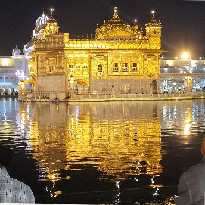
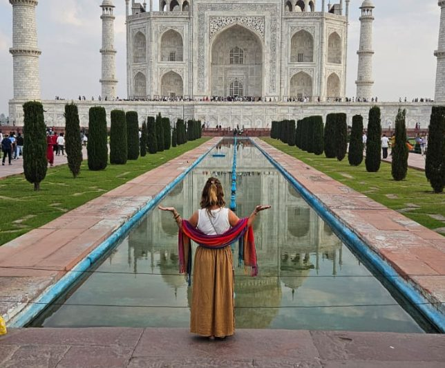
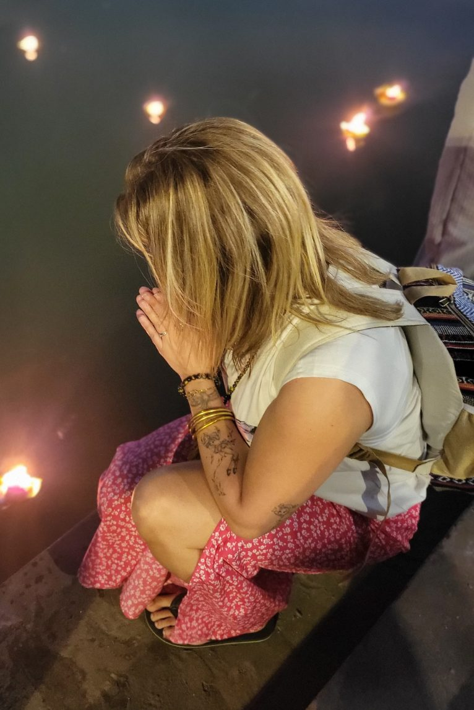
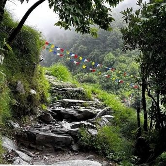
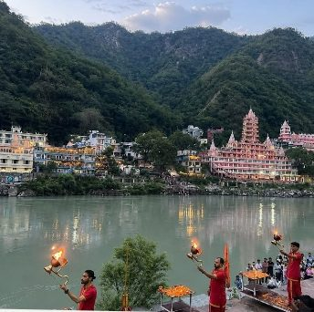
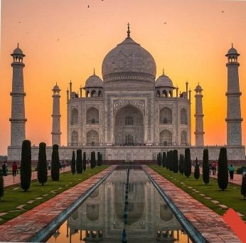
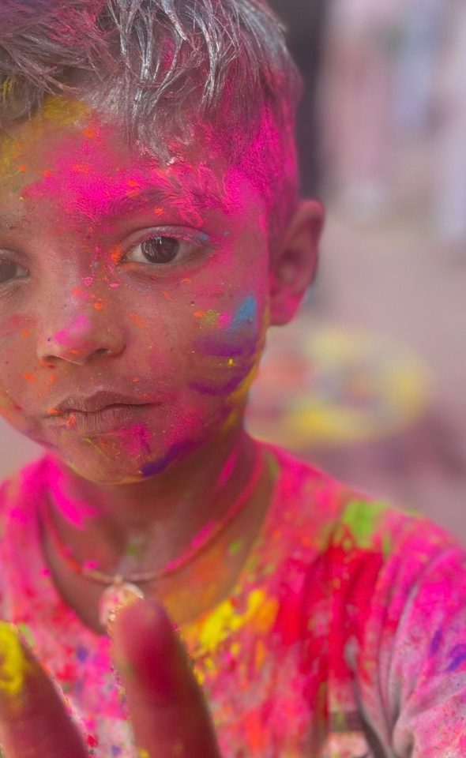
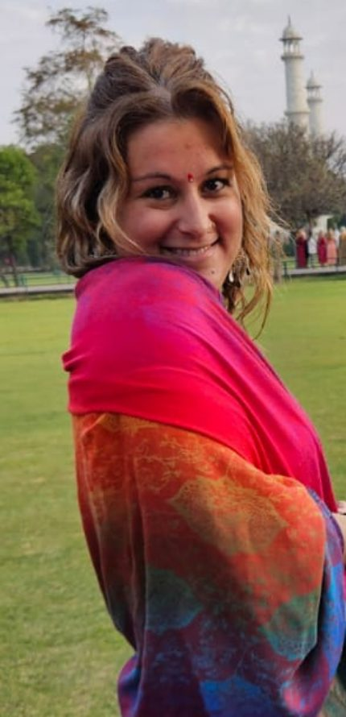

Amritsar
Le Golden Temple, ses reflets dorés et le repas partagé au langar.

✦ ✦ ✦
Retraite Holi · du 12 au 26 mars 2027
Quinze jours en Inde du Nord pour ralentir, ressentir, méditer, célébrer… et peut-être repartir avec quelque chose de différent en soi.

Sur son lit de mort, mon papa m'a confié ces mots :
« Ma fille, il faut que tu sois qui tu dois être sur cette terre, dans ce monde brut. »
Pour l'honorer, je suis partie en voyage spirituel en Inde. C'est là-bas que j'ai compris ce que je devais mettre en lumière.
Aujourd'hui, j'ai envie de vous emmener à mon tour. Pas simplement en voyage, mais à la rencontre d'une autre façon de vivre, avec la bienveillance et l'écoute qui accompagnent chacun de mes soins.
De Delhi aux rives sacrées du Gange, des montagnes de l'Himalaya jusqu'au majestueux Taj Mahal, une Inde authentique, spirituelle et profondément vivante.

Le Golden Temple, ses reflets dorés et le repas partagé au langar.

L'Himalaya, les monastères tibétains, les drapeaux de prières et les chemins de randonnée.

Le Gange au lever du soleil, l'ashram, le stage de yoga Art of Living et trois jours de silence.

Le Taj Mahal, pour clore le voyage dans l'émerveillement.
Le voyage est construit autour de Holi. Se laisser emporter par la musique, les sourires et les éclats de poudre colorée : une célébration joyeuse où les barrières s'effacent et où l'on partage un moment unique avec les habitants.
Méditation, yoga et respiration, des cérémonies sacrées, des temples et des monastères.
Un sourire, un repas partagé, un artisan, un moine, une famille croisée sur le chemin.
Les épices, les marchés, le chai masala et les recettes traditionnelles.
Le calme d'un ashram, puis le confort d'un hôtel d'exception.

du 12 au 26 mars 2027
2 980 €
Chambre simple possible en supplément · Paiement en plusieurs fois sans frais · Chèques-vacances acceptés jusqu'à 600 €
Voyage de janvier 2026
Lorsque je suis arrivée en Inde, j'étais encore très fermée, avec beaucoup de tristesse en moi. Tu l'as ressentie immédiatement. Je sais que ce voyage et toutes les belles rencontres que j'y ai faites m'ont profondément aidée et marquée.
Elle n'est que bienveillance, amour et dévotion pour mettre ses facultés au service des autres, sans nous effrayer. Elle ne force pas à croire à quoi que ce soit.
C'est un rayon de soleil, elle nous transmet sa joie intérieure. Nous étions en Inde lors de ces deux soins, c'était magique.
Alice, ma merveille, préserve ce que tu es, car tu es rare et précieuse.

Pour le programme détaillé ou pour réserver votre place, appelez-moi ou écrivez-moi.
Basée à Marseille